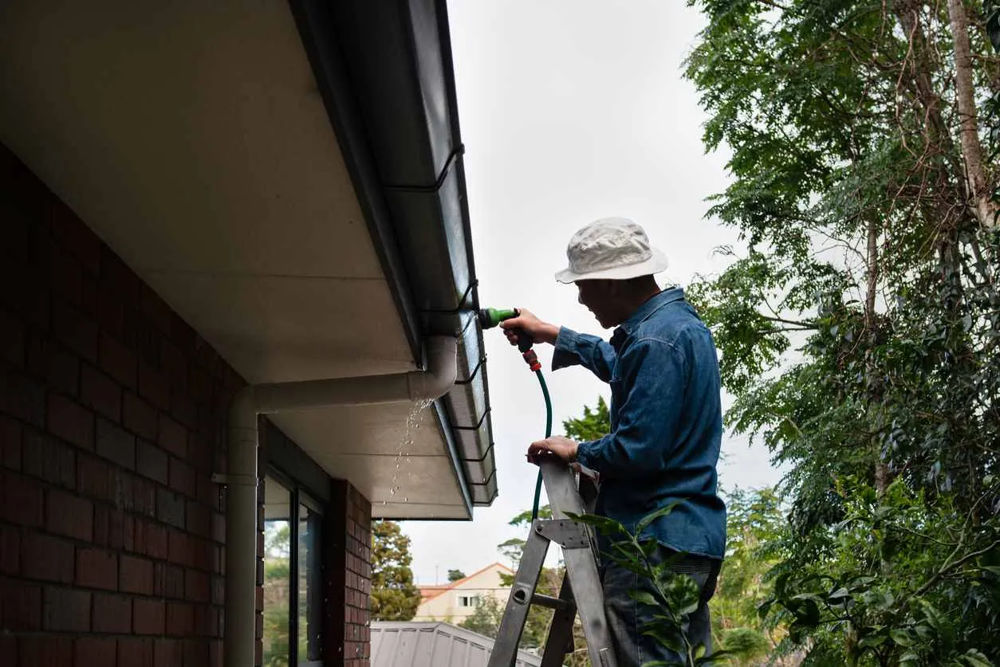

Free Roofing Estimates from Licensed Utah Roofing Contractors
Before hiring a roofing company near you to repair or replace your roof, you should receive a quote. A quote tells you how much to budget and which contractor offers the best value. However, getting an estimate shouldn’t cost you much. American Roofing gives Utah homeowners and businesses free roofing estimates.
But it’s also important to know what goes into estimating roofing project costs to be more informed when comparing and contrasting quotes. Here are several factors we consider when making free roofing estimates.



What to Expect During a Roof Estimate
When you call American Roofing, your local roofing company, to conduct a complete free roofing estimate, the team will do a site visit to check the roof’s features and measurements in person.
1. Structure Check: This involves checking the existing roof for structural damages and studying the roof’s design.
2. Material Check: We’ll also inspect the existing roof material for other issues we might have missed in virtual estimates.
3. Work Check: We can start accurately computing the project’s labor and equipment costs.
4. Final Report: The team will submit a finalized quote for your roofing project.
If you aren’t sure exactly which roof repair services your condo needs, that’s fine too. We can have an expert assess your situation to take out the guesswork.
How We Estimate Roofing Service Costs
These are the key aspects considered when estimating the cost of a roof repair or replacement project:
Size
When providing free roofing estimates, roof size is one of the most important factors. The larger the roof, the more it costs to repair or replace due to increased time, labor, and materials required to complete the job.
Pitch
The pitch or steepness of your roof will be one of the calculations we make. Roofs with steeper pitches are typically more expensive than those with gentler slopes. The higher cost is due to the extra work required to make the site safer from accidents such as roofers slipping and falling from the steep roof.
Accessibility
The accessibility of your roof is another cost consideration. You must ask questions like: How difficult would transporting and carrying goods to the job location and getting the team onto the roof be? The more time, effort, and equipment needed to access the site, the higher the roofing costs.
Materials
Besides computing the materials needed, we also factor in the type of materials used in the project. For instance, a slate roof would cost more than an asphalt shingle roof.
Additional Roof Details
We also consider roof features such as chimneys and skylights while estimating the project cost, as they complicate how we can access the roof and install new materials.